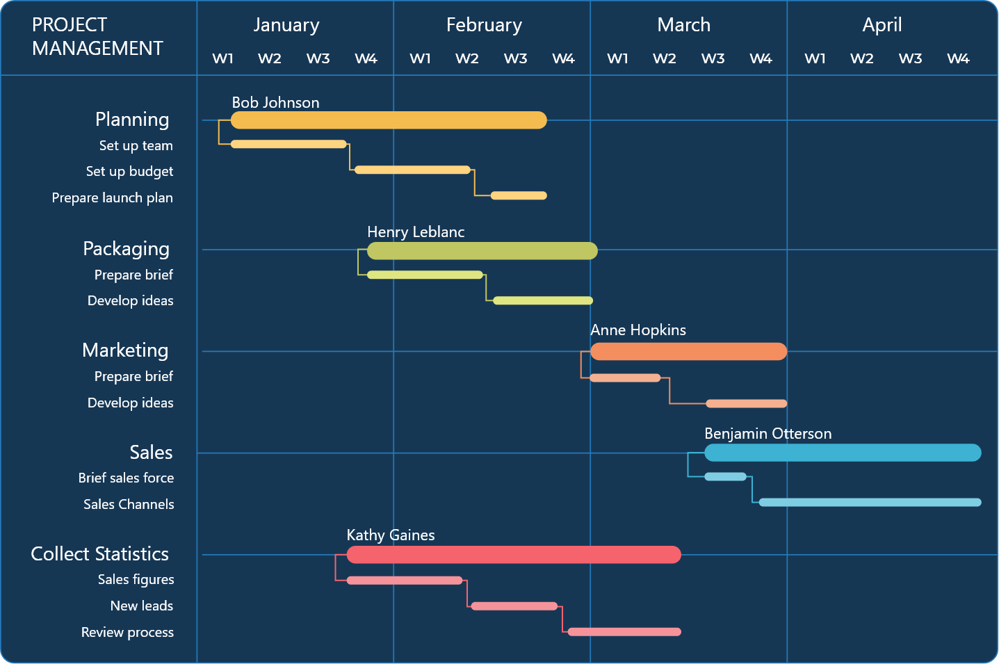

Oprogramowanie do zarządzania pracą Zadania & dokumenty Wystarczająco potężne, by zastąpić narzędzia dla firm Wystarczająco proste, by zastąpić arkusze kalkulacyjne
Najlepsze kompleksowe rozwiązanie
Uprość pracę i zrób więcej.
Planix to potężne narzędzie do zarządzania projektami, które pomaga
Twojemu zespołowi osiągać więcej, przy mniejszym przełączaniu się
między zadaniami. Tak jakbyś miał jedno narzędzie do wszystkiego.


Wizualizacja postępów
Zapanuj nad harmonogramem swojego projektu dzięki nowej funkcji generowania diagramów Gantta. Teraz możesz w kilka sekund przekształcić swoje zadania w przejrzystą oś czasu, która ułatwi planowanie, monitorowanie zależności i dotrzymywanie kluczowych terminów.